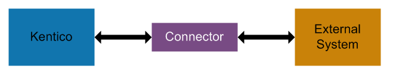

Using the integration bus
The integration bus allows developers to connect Kentico with third party systems, such as CRMs or ERPs. The purpose of the integration is to synchronize objects and pages (in both directions). The data exchange is ensured by connectors. Each connector is a standard .NET class that needs to be implemented by a developer.
